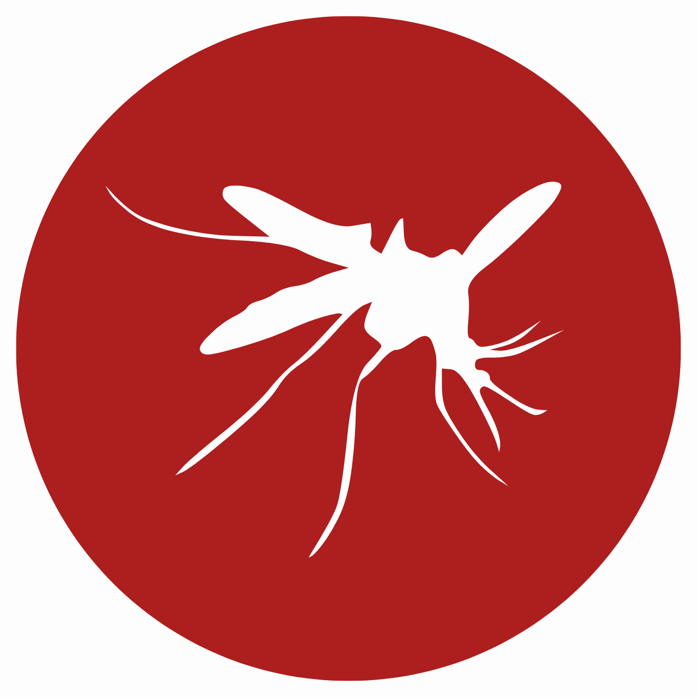
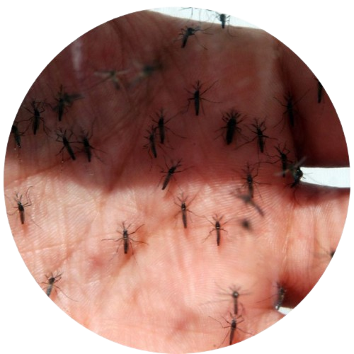
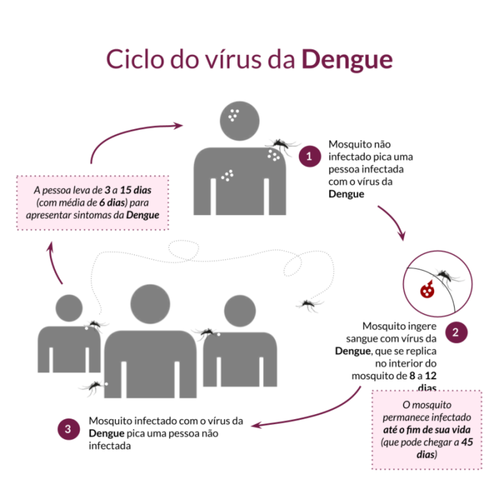
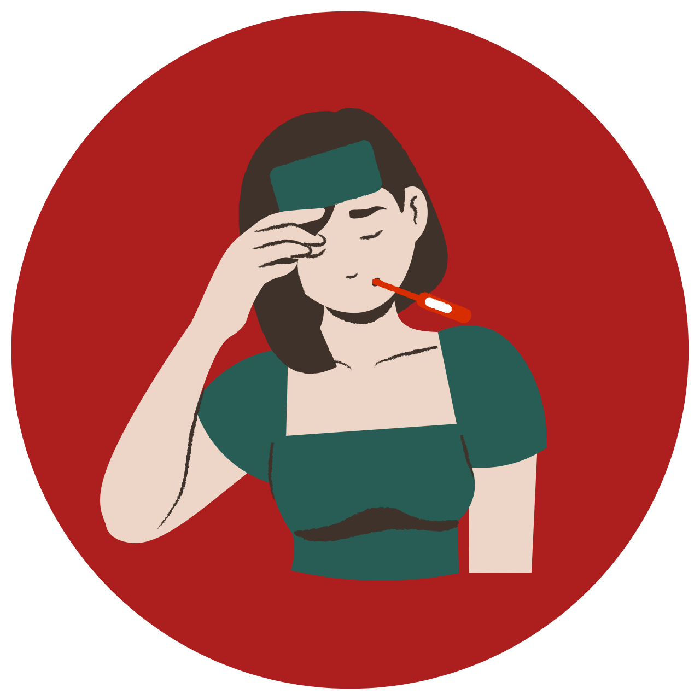
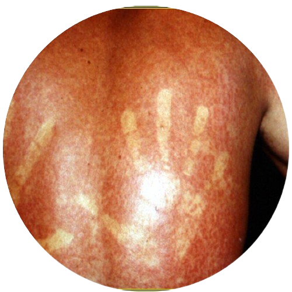
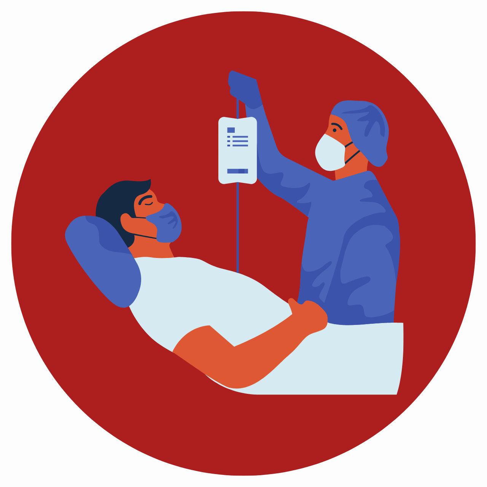
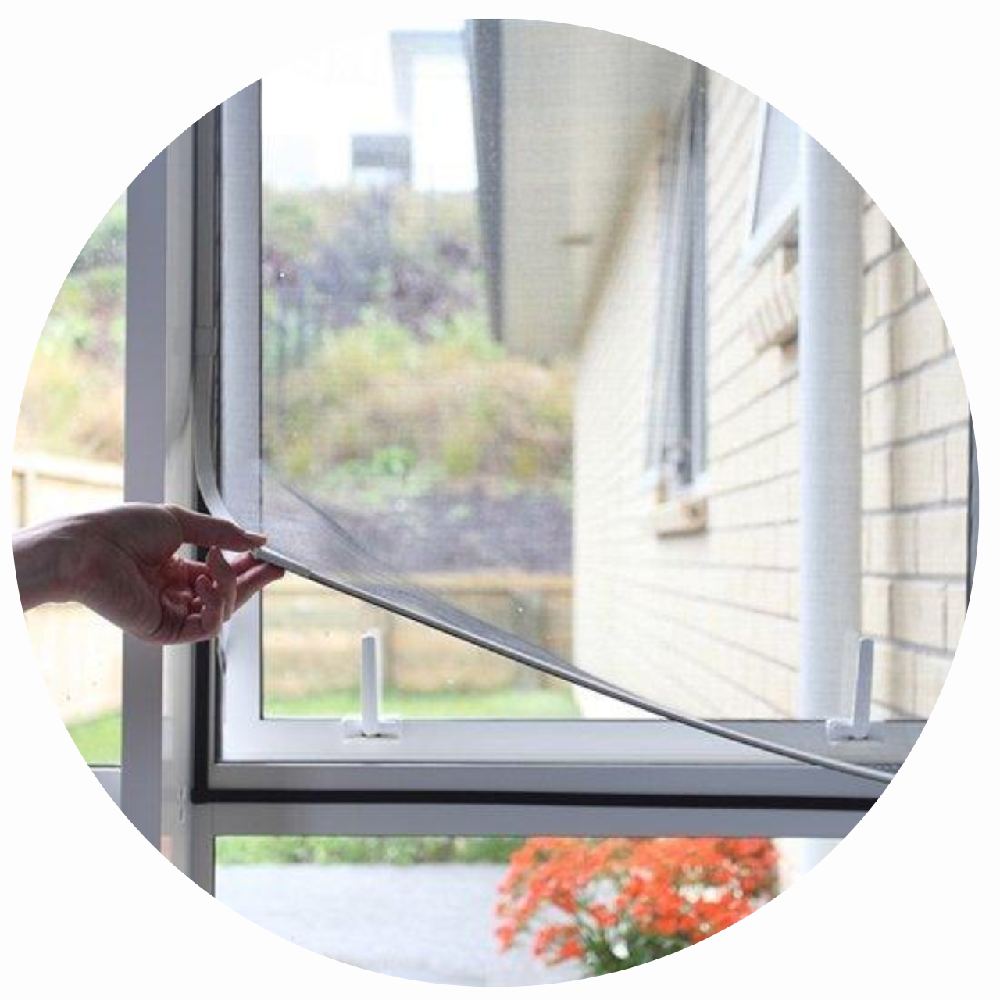

A dengue é uma arbovirose (doença causada por vírus) que atinge mais
de 100 países nas regiões da África, Américas, Mediterrâneo Oriental,
Sudeste Asiático e Pacífico Ocidental. Ocorre principalmente em áreas
urbanas com clima tropical ou subtropical. A sua forma grave é uma das
principais causas de doenças graves e morte de crianças dos países da Á
sia e América Latina.
No Brasil, o período do ano com maior transmissão da doença ocorre nos
meses mais chuvosos (novembro a maio). Além disso, no dia 19 de novembro
comemora-se o Dia Nacional de Combate à Dengue, tal data serve de alerta
para a população e a participação dela para o combate ao vetor da doença.
Agentes etiológicos
A dengue é causada pelo grupo do vírus DENV, que pertencem ao gênero Flavivirus,
tal grupo apresenta quatro tipos diferentes desse vírus, que são denominados os
sorotipos: DENV-1, DENV-2, DENV-3 e DENV-4. Estes sorotipos são geneticamente
distintos, mas causam sintomas bem parecidos nos infectados. Caso a pessoa seja
infectada uma segunda vez por outro sorotipo, os riscos de contrair a dengue grave
aumentam.
Reino: Animalia Filo: Arthropoda Classe: Insecta Ordem: Diptera Família: Culicidae Gênero: Aedes Espécie: Aedes aegypti

Sobre ele
O Aedes aegypti é conhecido por ser um vetor de várias doenças, incluindo a
dengue, a febre amarela, a chikungunya e o vírus Zika. Essas doenças representam
um sério problema de saúde pública em várias regiões tropicais e subtropicais do mundo.
O Aedes albopictus, também conhecido como mosquito-tigre, é outro
mosquito importante em termos de saúde pública. Essa espécie, assim
como o Aedes aegypti, são considerados vetores importantes dessas doenças,
pois se alimentam de sangue humano.

Fonte: Sérgio Castro / Estadão (2016)
Transmissão
Através do vetor
A única forma de transmissão da doença ocorre de pessoa para mosquito e de mosquito
para pessoa. O mosquito se alimenta de uma pessoa infectada

Fonte: Milenne Souza de Lima / CIEVS/RS (2023)
Ciclo da doença
Mosquito infectado
Quando a fêmea do mosquito se alimenta do sangue de uma pessoa infectada, ele
também se torna infectado. A partir desse momento, o vírus se multiplica dentro
do mosquito, passando por um momento de incubação.
Mosquito transmissor
Depois do período de incubação, o mosquito torna-se um vetor transmissor. Ao picar
uma pessoa saudável, ele injeta sua saliva, que contém vírus da dengue. O vírus
entra na corrente sanguínea da pessoa e começa a se replicar.
Reinício
Se a pessoa infectada por picada novamente, inicia-se um novo ciclo de transmissão da dengue.
Sintomas da dengue
É importante saber que a dengue pode progredir para a forma grave, que apresentam sintomas como choque, falta de ar, sangramento intenso e/ou complicações graves nos órgãos. A doença, quando não está na fase mais grave, pode ser assintomática ou apresentar alguns dos seguintes sintomas:

Febre alta
Sintoma frequente; a temperatura pode ser maior ou igual a 38°C.
Dores no corpo
Consistem em dores intensas nos músculos e nas articulações.
Erupções cutâneas
Algumas pessoas infectadas podem desenvolver essas erupções (manchas vermelhas na pele).
Dor abdominal intensa
O desconforto abdominal contínuo também podem ser acompanhado por náuseas e vômitos.
Sensação de mal estar
Os sintomas podem vir acompanhados de falta de apetite, fraqueza e fadiga.
Aumento do hematócrito
O exame que mede a porcentagem de hemácias no sangue.

Fonte: Kléber Luz (2019)
Tratamento
Ainda não existe um tratamento específico para a dengue. Porém, existem medidas que
são adotadas no tratamento, como:
Hidratação
É recomendado a ingestão de líquidos em abundância, como água, sucos, chás ou soro caseiro,
para repor o líquido perdido devido à febre e à transpiração excessiva.
Repouso
Descansar adequadamente para o corpo se recuperar e combater a doença.
Controle da febre
Alguns medicamentos são utilizados para reduzir a febre a aliviar os sintomas.
No entanto, alguns deles devem ser evitados, como a aspirina e ibuprofeno, pois
podem aumentar o risco de complicações hemorrágicas.

Caso da dengue hemorrágica
O tratamento hospitalar pode envolver medidas adicionais, como a reposição de
líquidos intravenosos, transfusões de sangue e cuidados intensivos.
Medidas profiláticas
Algumas ações que incluem o controle da população dos vetores ou a contaminação da doença são:
1
Eliminar focos de água parada
2
Redução de criadouros de mosquitos
3
Uso de repelentes
4
Uso de roupas protetoras

5
Manter janelas com telas de proteção
6
Usar mosquiteiros em berços e camas
7
Aplicar larvicidas em possíveis criadouros
8
Remover folhas que atrapalham o escoamento da água
DIAS, Larissa B. A.. Dengue: transmissão, aspectos clínicos, diagnóstico e tratamento. Disponível em: https://www.revistas.usp.br/rmrp/article/view/171. Acesso em: 29 abr. 2023.
SAÚDE, Biblioteca Virtual em. Dia Nacional de Combate à Dengue. Disponível em: https://bvsms.saude.gov.br/19-11-dia-nacional-de-combate-a-dengue/. Acesso em: 12 maio 2023.